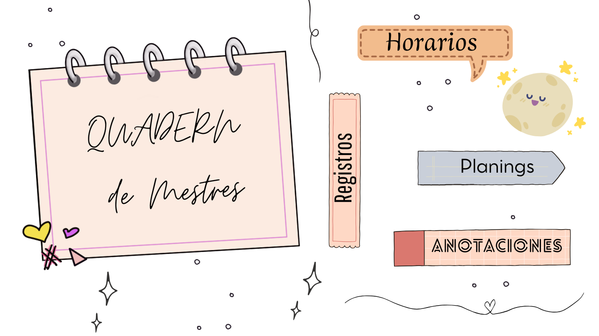

 Caracteristicas principales
Caracteristicas principales

Gestión de Alumnos
Registra y organiza a tus estudiantes con toda su información relevante.

Control de Notas
Lleva un seguimiento detallado de las evaluaciones y calificaciones.

Calendario
Planifica tus clases y eventos importantes con un calendario integrado.

Notas Rápidas
Apunta recordatorios y notas importantes sobre tus clases y alumnos.